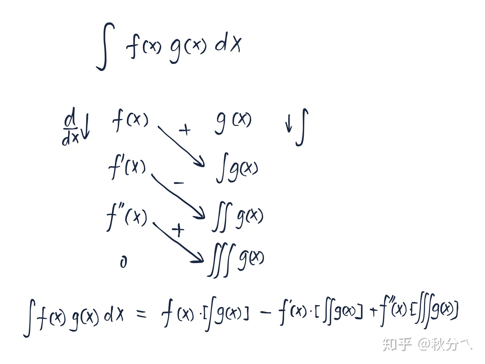
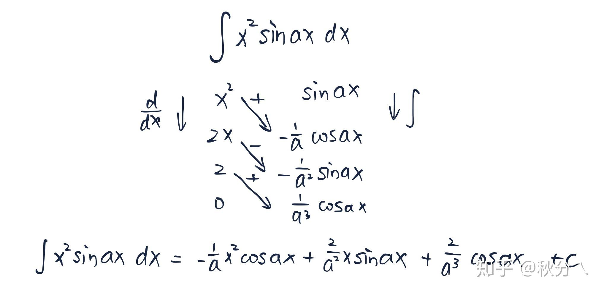
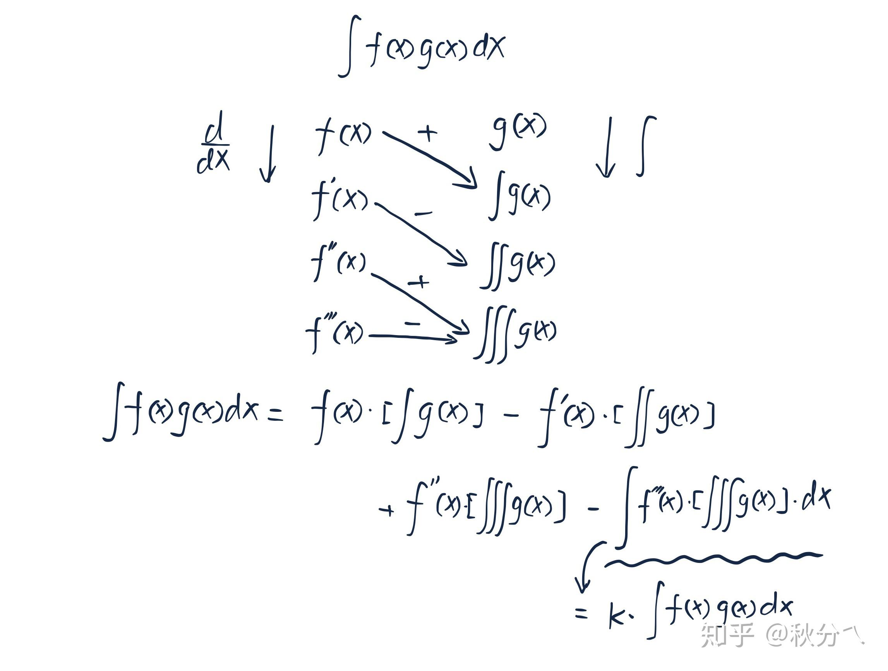
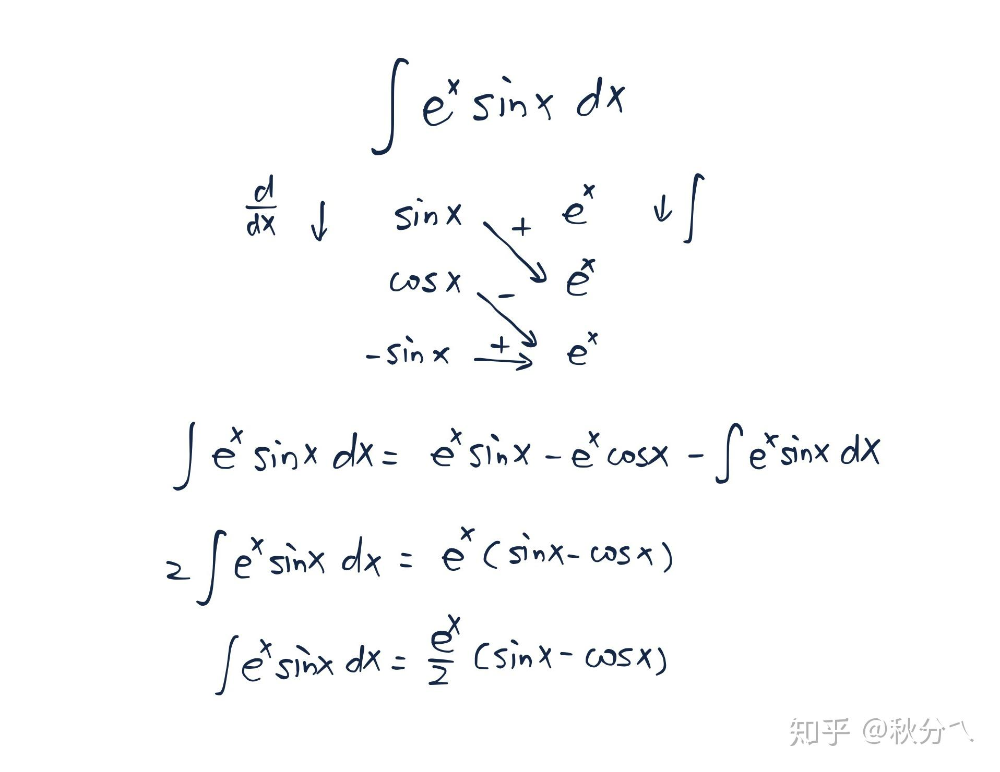
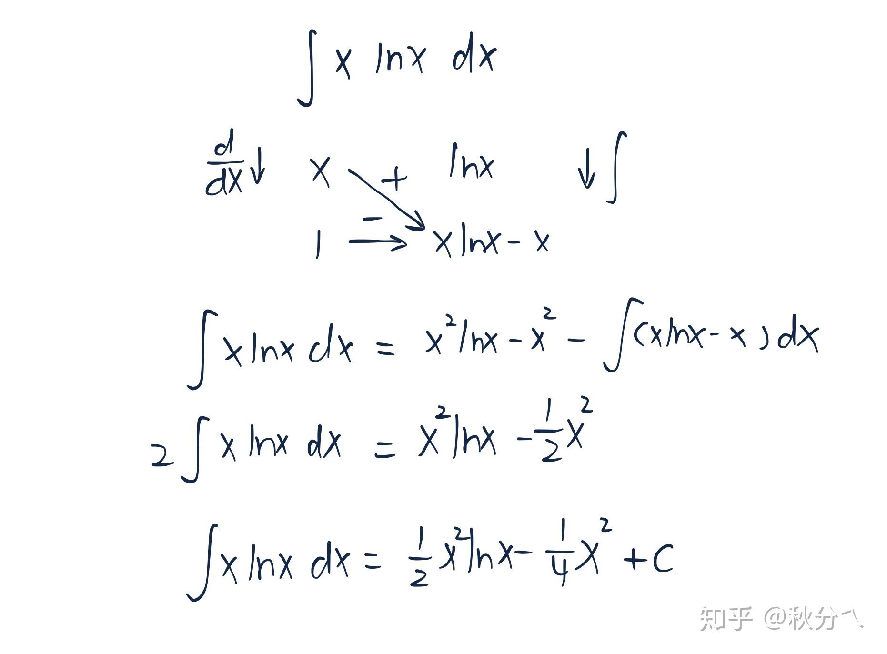
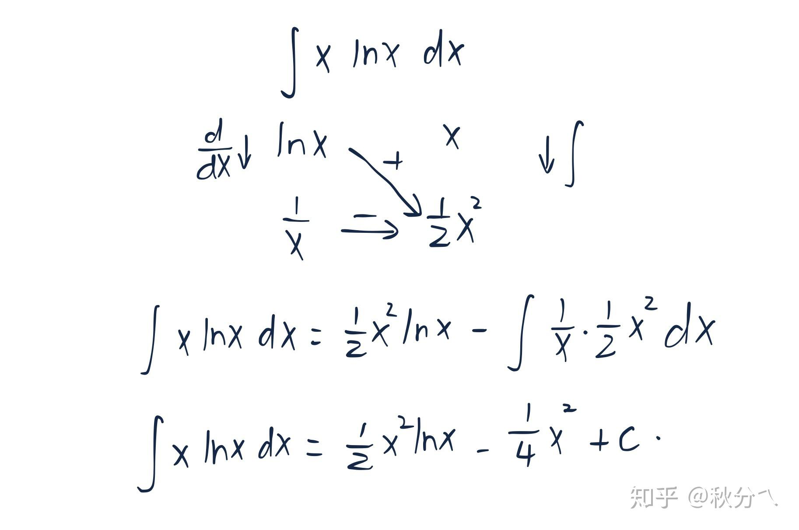

分部积分法→列表积分法
Author: [秋分丿]
Link: [https://zhuanlan.zhihu.com/p/81024770]
翻了一下教材，似乎国内的教材很少有说列表积分法的。全都是到了分部积分就戛然而止了。虽然这样也不是不行，但是在后面的习题中都会有连续几次的分部积分法。这即使不让人感到头大也让人感到繁杂无比。
除此之外，还有那些分部积分到一半就开始用代数方法解出积分的情况。更是让人摸不着头脑：我怎么知道要这么做？我怎么知道到这一步要开始用代数方法？
实际上这一切，前者用列表积分便可以迎刃而解，后者用“半个”列表积分法（自己取的名字…）也能很简单。不过对于后者，还会有一些巧妙的变化。
内容出自《托马斯微积分》7.2分部积分一节。
正文
首先来看一下普通的分部积分法：
对于 ：
因为分部积分法是
分出待会要处理的 和 。为了方便起见，就写出代表的 和 :
则：
按照分部积分法的公式带入，则有：
如果要再来一次分部积分法呢？
显然，如果取 ,那么待会取 和 的时候就回到之前的积分去了。于是只能之前取了微分的继续微分，取了原函数的继续原函数。那接下去再来一次。
为了使结论明显直观，把 的原函数**不规范（不规范！不规范！不规范！！！）**的用 来表示求了一次原函数， 表示求了两次原函数。则第一次分部积分有：
接下来确定 和 :
则：
按照分部积分法的公式带入，则有：
可以注意到几点：
1)、选择出谁求导谁积分之后，求导的会一直求导，积分的会一直积分。
2)、函数直接相乘的项，求导的次数始终比积分的次数少一，或者说积分的次数比求导的次数多一。
3)、由于有一个负号，那么函数直接相乘的项的负号就应该是：
4)、剩下一个未完成的积分项，这个积分项中求导的函数的次数和积分的函数的次数相等。
第4)点得注意了，如果一个求导到零了，那么它就不存在了。就前面函数相乘的结果就是积分的结果。如果最后未完成的积分恰好是要求的积分式！那么就可以用代数的方法解出来。
在上一段话中先考虑前者，即两个函数中有一个能求导到零。那么对另一个就是能积分“用于求导的函数求导到零的次数”那么多次。比如某一个函数第三次求导到零，那么另外一个函数应当能“坚持”积分三次。满足这些要求就可以用列表积分法了。然后将函数按照以下方式列出来：
（空格空格）
那么，原积分就等于：
将上面四行每行对其排列着，然后划箭头： 这样连起来，然后在上面标上 ，这样会变得很明显：

这只是一个三次求导到零的情况，四次五次都可以。
这么这么看来，选择进行列表积分条件就很清晰了：
1)、某一个函数能求导到零
2)、另一个函数能比较简单的积分和求导的函数那么多次。
可见：
、
都是这样的经典类型（函数类型无论正弦还是余弦都可以，不再分别举例，下同）。除此之外当然还有其他类型的，比如 、 .具体的可参见我的文章：
https://zhuanlan.zhihu.com/p/78976041
例：

对于后者，即最后未完成的积分式恰好是需要求的积分式，则使用半个列表积分法。
什么情况下最后未完成的积分式恰好是需要求的积分式？最经典的情况就是：
稍微思考一下就知道， 无论求导还是积分都是不会变的，而 两次积分或者求导之后便会变回之前的样子，这样的话就有了未完成的积分式恰好是需要求的。半个分部积分的操作模板与上面的很像，只是最后多了一个横着的“ ”表示最后那一个积分。

如此看来，使用半个列表积分的条件也很明显了：
要么一个函数求导之后不变，另一个函数积分之后函数形式循环（积分和求导的函数可交换）；要么两个函数积分和求导都循环。
经典的题目类型就是：
除此之外还有 ，不过这类的题目也可以不用列表积分法求解，而是用积化和差求解。具体的可见我的文章：
https://zhuanlan.zhihu.com/p/77893101
例：

似乎在题头的时候说了“不过对于后者，还会有一些巧妙的变化。”
实际上，半个列表积分法不只是可以处理最后未完成的积分式与要求的积分式一样的情况。更深层的，前两种方法实际上都是在对最后一项未完成的积分项做文章：要么最后一项积分项为零，要么最后一项积分项和所求相同。
但是忽视了最简单的一种情况，（似乎）也是分部积分最初的目标：最后一项积分项能积、易积即可。最后一项积分项为零当然是易积的，但是易积绝不止为此。如接下来这题，就很巧妙：
若以 求导 积分，则有：

积分的项再积分的话发现正是要求的积分，不能再往下积了。但是左边的恰好又是 ，这样一来，就又出现了要求的积分。半个列表积分法就安排的妥妥的。
若以 积分 求导，则有：

求导的发现求导无止尽，越求导离“0”和原来的函数形式越远。但是骤然发现，求导和积分剩下的都是幂函数！这明显是很容易积分的。那么，果断使用半个积分法。
除此之外， 也可以同样的用这样的方法求解，对 求导，对 “ ”积分，用上的半个列表积分法也能同样解决问题。但是完全没有必要了…
读者可以尝试 ,分别尝试选用不同的函数求导和积分，与 有异曲同工之妙。
一眼看出到底是用求导到零的列表积分法，还是循环的半个列表积分法固然是好，这也是一个求积分的方向。特别是当看见某个乘积中的函数可以求导到零时，看见出现三角函数指数函数时，应当敏感的找到这个方向。
但是“巧妙的半个列表积分法”可以让人意识到，列表积分法应该是随心所欲的。熟练的话，就完全可以抛掉那些条条框框，只需要做到：**尝试一下列表积分法吧。**然后选择两个准备要求导和积分的函数，在草稿本或者脑子里求一列导，求一列积分。观察一下两列的函数变化以及关系，就可以从容的选择出接下来要做的步骤。
更新时间：2023-12-20 15:02
转载请注明来源，欢迎指出任何有错误或不够清晰的表达本文链接：https://czruby.github.io/2023/12/20/分部积分法之列表积分法/